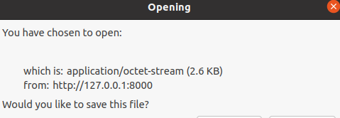

Markdown meta data
Pelican supports Markdown via Python-Markdown, Markdown meta-data is handled by its Meta-Data extension, this extension supports YAML style delimiters to mark the start and/or end of your meta-data.
---
Title: this is as title.
---
Markdown supports latex math
The plugin pelican-render-math gives Pelican the ability to render mathematics inside post content. It accomplishes this by using the MathJax JavaScript engine.
- Inline Math: \(E=mc^2\)
- Displayed Math
Images relative path
By default, if the images are not in the content/images, we need add prefix {static} on image tag:

and the generated html is:
<img alt="" src="/test_images_relative_path/images/smile.png">
.html file in output directory lead to octet-stream
The .html file in generated output directory lead to browser open octet-stream of .html file instead of open index.html when visit
locahost://127.0.0.1:8000.
pelican -r -l -D

Markdown intent
Ref Markdown plugin: https://github.com/radude/mdx_truly_sane_lists
Theme
$ pelican-themes -lv
\envs\pelican\lib\site-packages\pelican\themes\notmyidea
\envs\pelican\lib\site-packages\pelican\themes\simple
The default theme is notmyidea, but the simple theme is a good start, it only contains template, without css and javascript.